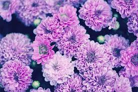
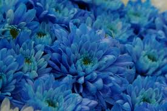
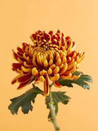
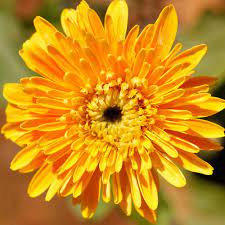
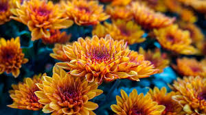

PORTFOLIO
WELCOME To My Profile

Hello, I’m TUHINA
I am from Cuttack. I am a CSE student in GIFT(Gandhi Institute For Technology).
About My Activities..
1. Leadership Work and Positions
2. Sports
3. Creative Activities
4. Travel
5.
Arts
&
Hobbies
About My Hobbies..

A hobby is something which one loves to do in his/her leisure time.
Different people have different hobbies.
My Favourite Hobby is Gardening..Gardening is a very pleasant and rewarding a hobby. Some nature lovers have a
hobby of gardening because they love nature's scenic beauty. In gardening, people grow different types of
plants, shrubs, bushes where flowers blossom. Plants and trees are an essential component of our life.
"The beauty of the flower is a by-product of what it takes for the plant to attract pollinators," says
dePamphilis.
"The features that we appreciate are cues to pollinators that there are rewards to be found
in
the flower.
Flowers always make people better,happier and more helpful;they are sunshine,food,and medicine to the
soul.
Now I'm describe Something about Chrysanthemum Flower.
About Chrysanthemums
Chrysanthemums, sometimes called mums or chrysanths, are flowering plants of the genus Chrysanthemum in
the family Asteraceae. They are native to East Asia and northeastern Europe. Most species originate from East
Asia and the center of diversity is in China. Countless horticultural varieties and cultivars exist.
Scientific Name : Chrysanthemum
Order : Asterales
Family : Asteraceae
Tribe : Anthemideae
Kingdom : Plantae

What do Chrysanthemum flowers mean?
In general, chrysanthemums are believed to represent happiness, love, longevity and joy.

What is Chrysanthemum flower good for?
Chrysanthemum is used to treat chest pain (angina), high blood pressure, type 2 diabetes, fever, cold,
headache, dizziness, and swelling. In combination with other herbs, chrysanthemum is also used to treat prostate
cancer. As a beverage, chrysanthemum is very popular as a summertime tea in southern China.

Are Chrysanthemums the flower of death?
White chrysanthemum blooms are reserved for funerals and decorating graves. In several European nations,
including Belgium, Italy, France and Austria, chrysanthemum symbolism has to do with death. The only time
chrysanthemum flowers are given in these nations is as a token of comfort, grief or bereavement.

Why is Chrysanthemum poisonous?
Another vibrant flower you've surely seen on your quarantine-inspired walks, Chrysanthemums are mildly
toxic to cats. What's interesting is that they contain pyrethrins, which is an ingredient in many dog flea and
tick medications that is particularly poisonous to cats.

Is Chrysanthemum harmful to humans?
All parts of the chrysanthemum plant are potentially harmful if ingested by mammals, especially the
flower heads. Symptoms of toxicity include nausea, vomiting, rashes, increased salivation, diarrhea and lack of
coordination.

How do you use Chrysanthemum flower?
If you use chrysanthemum you've grown yourself, pluck the flowers and leave them to dry for several days
in a sunny spot, or use a food dehydrator. You can also buy dried chrysanthemum blooms in health food and Asian
groceries. Boil the water and allow it to cool for about a minute to around 100°F.

Do Chrysanthemums come back?
In sheltered gardens half-hardy, early-flowering chrysanthemums can be cut back to the ground in autumn
and left to overwinter in the garden. Otherwise lift them. You can either replant them into your greenhouse to
continue flowering or cut them back to store over winter.